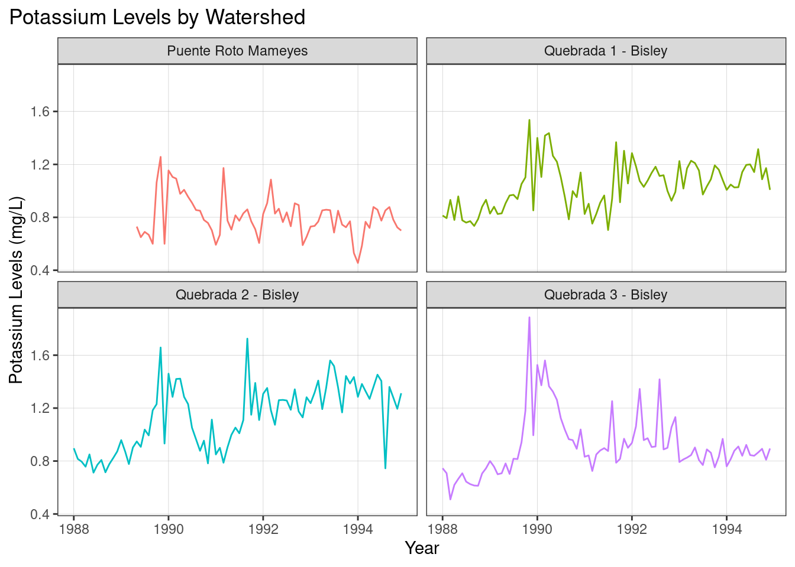
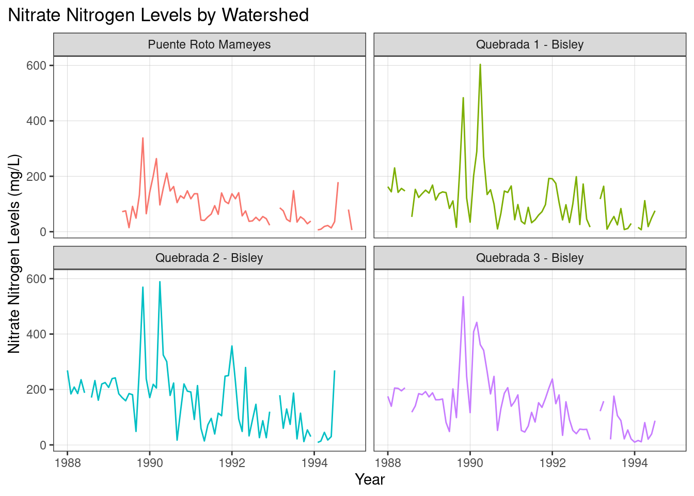
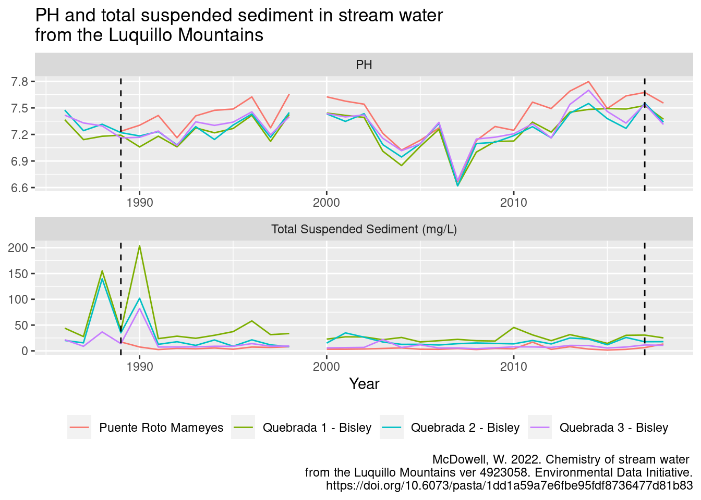

library(tidyverse)
library(here)
library(janitor)
library(ggExtra)
library(lubridate)
library(patchwork)Short Analysis of Lubridillo Site
Loading Libraries
Division of tasks
Created shared folder on Taylor-Adelaide
Created github repository and shared with collaborators-Alessandra
Created Quarto document with sections to work in separately- Group Effort
Import and tidy data- Group Effort
Graph Recreation-Andre/Guillermo
New Question- Alessandra/Adelaide
Slides- Guillermo
Import, tidy, and join data
# read in data for four sites
setwd("/courses/EDS214/pr/data/knb_lter_luq_raw")
prm <- read_csv("RioMameyesPuenteRoto.csv", na = c("NA")) %>%
clean_names() %>%
mutate(sample_date_ymd = lubridate::ymd(sample_date)) %>%
mutate(year = year(sample_date_ymd),
month = month(sample_date_ymd),
day = day(sample_date_ymd))
bq_1 <- read_csv("QuebradaCuenca1-Bisley.csv", na = c("NA")) %>%
clean_names() %>%
mutate(sample_date_ymd = lubridate::ymd(sample_date)) %>%
mutate(year = year(sample_date_ymd),
month = month(sample_date_ymd),
day = day(sample_date_ymd))
bq_2 <- read_csv("QuebradaCuenca2-Bisley.csv", na = c("NA")) %>%
clean_names() %>%
mutate(sample_date_ymd = lubridate::ymd(sample_date)) %>%
mutate(year = year(sample_date_ymd),
month = month(sample_date_ymd),
day = day(sample_date_ymd))
bq_3 <- read_csv("QuebradaCuenca3-Bisley.csv", na = c("NA")) %>%
clean_names() %>%
mutate(sample_date_ymd = lubridate::ymd(sample_date)) %>%
mutate(year = year(sample_date_ymd),
month = month(sample_date_ymd),
day = day(sample_date_ymd))
# merge data via full join
stream_water_df <- prm %>%
full_join(bq_1) %>%
full_join(bq_2) %>%
full_join(bq_3)
# export the data frame
setwd("/courses/EDS214/pr/data/processed_data")
write_csv(stream_water_df, "stream_water.csv")Recreate Graph
stream_quality <- stream_water_df %>%
select(sample_id, sample_date_ymd, no3_n, k) %>%
mutate(year = year(sample_date_ymd),
date = ymd(paste0(year, "-", month(sample_date_ymd), "-1"))) %>%
filter(year %in% 1988:1994)
monthly_stream_quality <- stream_quality %>%
group_by(sample_id, date) %>%
summarize(monthlyno3 = mean(no3_n, na.rm = TRUE),
monthlyk = mean(k, na.rm = TRUE)) %>%
mutate(sample_id = str_replace(sample_id, "MPR", "Puente Roto Mameyes")) %>%
mutate(sample_id = str_replace(sample_id, "Q1", "Quebrada 1 - Bisley")) %>%
mutate(sample_id = str_replace(sample_id, "Q2", "Quebrada 2 - Bisley")) %>%
mutate(sample_id = str_replace(sample_id, "Q3", "Quebrada 3 - Bisley"))ggplot(monthly_stream_quality, aes(x = date,
y = monthlyk) )+
geom_line(aes(color = sample_id)) +
labs(title = "Potassium Levels by Watershed",
x = "Year",
y = "Potassium Levels (mg/L)") +
facet_wrap(~sample_id) +
theme_test() +
theme(legend.position = "none",
panel.grid.major = element_line(colour = "gray",
size = 0.10),
plot.title.position = "plot") 
ggplot(monthly_stream_quality, aes(x = date,
y = monthlyno3) )+
geom_line(aes(color = sample_id)) +
labs(title = "Nitrate Nitrogen Levels by Watershed",
x = "Year",
y = "Nitrate Nitrogen Levels (mg/L)") +
facet_wrap(~sample_id) +
theme_test() +
theme(legend.position = "none",
panel.grid.major = element_line(colour = "gray",
size = 0.10),
plot.title.position = "plot")
New Question
Looking at the relationship between total suspended sediment and pH for the same three sites from 1989 to 2017.
sediment_ph_df <- stream_water_df %>%
select(-c(gage_ht, temp, cond, cl, no3_n,
so4_s, na, k, mg, ca, nh4_n, po4_p,
tdn, tdp, si_o2, don, dic, doc,
chloride_code, nitrate_code,
sulfate_code, sodium_code,
potassium_code, magnesium_code, calcium_code,
nh4code, po4code, doc_code,
dic_code, tdn_code, si_o2code,
don_code)) %>%
mutate(tss = as.numeric(tss))
sediment_ph_long <- sediment_ph_df %>%
pivot_longer(cols = c(p_h, tss), names_to = "parameter") %>%
group_by(year, parameter, sample_id) %>%
summarize(mean_parameter = mean(value, na.rm = TRUE)) %>%
mutate(sample_id = str_replace(sample_id, "MPR", "Puente Roto Mameyes"),
sample_id = str_replace(sample_id, "Q1", "Quebrada 1 - Bisley"),
sample_id = str_replace(sample_id, "Q2", "Quebrada 2 - Bisley"),
sample_id = str_replace(sample_id, "Q3", "Quebrada 3 - Bisley"),
parameter = str_replace(parameter, "p_h", "PH"),
parameter = str_replace(parameter, "tss", "Total Suspended Sediment (mg/L)"))ggplot(sediment_ph_long,
aes(x = year,
y = mean_parameter)) +
geom_line(aes(color = sample_id)) +
facet_wrap(~parameter,
scales = "free",
ncol = 1) +
theme(legend.title = element_blank(),
legend.position = "bottom") +
geom_vline(xintercept = 1989,
linetype = "dashed") +
geom_vline(xintercept = 2017,
linetype = "dashed") +
labs(title = "PH and total suspended sediment in stream water \nfrom the Luquillo Mountains",
caption = "McDowell, W. 2022. Chemistry of stream water \nfrom the Luquillo Mountains ver 4923058. Environmental Data Initiative.\nhttps://doi.org/10.6073/pasta/1dd1a59a7e6fbe95fdf8736477d81b83",
x = "Year",
y = NULL)